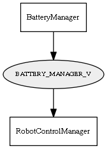

Global overview
All modules
All variables
All commands
Mission files
Pipelines
Variable: BATTERY_MANAGER_V
Variable info:
Variable name
Short description
Who publishes it?
Who subscribes to it?
BATTERY_MANAGER_V
Voltage(V) of the monitored battery as an mrpt::CObservationBatteryState
BatteryManager
RobotControlManager
Variable graph:

Detailed description:
Voltage(V) of the monitored battery as an mrpt::CObservationBatteryState
Page generated by
Mooxygen 1.1.0
at Thu Jan 22 11:30:21 2015